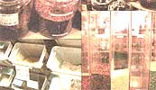

Buying & storing bulk foods.
Once relegated to your funkier neighborhood stores, food co-ops, and health food stores, they've found their way into the local grocery, pet stores, and chain supermarkets. They've multiplied, taking over entire sections and walls of stores, beckoning to the expert and amateur alike.
Once staid and predictable, they are now multi-faceted, featuring simultaneously the basic, the exotic, and the unusual. "They" are bulk-food bins and what was once the domain of basic staples, such as flour and oatmeal, is now the home of black bean flakes, baby French lentils, and cold-pressed, extra virgin olive oil.
Fortunately, both the economic and creative virtues of shopping by bulk are available to all of us in more ways than ever before. For the experienced bulk-food shopper, a wider variety of goods can increase creativity in meal planning and food preparation. For the novice, shopping for bulk foods can be a lesson in cost savings, an introduction to new flavors and foods, and a step towards maintaining a well-stocked, always interesting pantry.
With cost savings being a major incentive for purchasing in bulk, let's do a little comparison shopping. Comparing identical products, savings range an average of 15-45 percent with spices bought in bulk providing the biggest savings. For example, a one ounce package of cinnamon sticks from a local grocery retailed at $6.79 versus $7.99 per pound when bought in bulk. Couscous and other specialty grains averaged a 30 percent savings when bought in bulk, while prepackaged and dried fruit averaged a 17 percent savings. The greatest discounts are, as you might imagine, available when buying in true bulk-50 pound bags of flour, 25 pound bags of sugar, 25 pound packages of whole wheat past abut savings are available by purchasing in much smaller quantities and simply "packaging" it yourself.
In case a savings of 15 percent doesn't seem worthwhile as compared to simply grabbing a pre-packaged item from your local chain store, remember that those savings add up rapidly. Saving 15 percent on a $6.99 per pound food item is a savings of $1.05 or a 15 percent return on investment. I challenge you to find a similar, short-term investment that keeps your assets easy to reach and in your pocket ...or your pantry.
But comparing prices pound for pound or ounce for ounce is only one measurement of cost savings. What if you don't want to purchase a full pound of dried apricots or millet? What if you simply want to try out a new recipe that calls for only a pinch of saffron or one-half cup of quinoa? Or what if you only want to purchase enough cinnamon sticks for a Christmastime mulled wine? Purchasing in bulk can also mean purchasing from bulk bins that allow you to package a personally chosen quantity of any number of things, from organic dates and sun-dried tomatoes to shampoo and falafel mix. Purchasing only what you want, in the quantity that you want, prevents "leftovers" of items that you've decided your family can live without or that wind up sitting in the back of a cupboard, unused, unlabeled, and eventually, thrown away.
Ron Lautrup, the bulk foods and commodities buyer for Mountain Peoples, a distributor of bulk food and beauty products, encourages consumers to buy bulk for a number of reasons. Having managed a co-op for seven years before joining Mountain Peoples, Lautrup believes that the benefits of buying in bulk are numerous. "It's not just about money, although buying in bulk is clearly cheaper. It's a no-risk or low-risk way of trying new products. It's a way of protecting the earth from unnecessary plastic and other packaging. Personally, I feel it's also one of the best ways to buy organic and to connect to and support the farmers. Many times, we're able to buy from farmer direct, not mass distributor direct ...that allows us to pass along not only savings but freshness and a wider selection of products than some massive consumer company. It's not just about saving money."
Of course, purchasing staples in true bulk quantities does make terrific economic sense. Especially if you know in advance how to store them so that you obtain a full shelf life on the product. In some instances, that may mean keeping items in an air-tight container such as a mason jar, zip lock-style plastic bag, plastic storage container, or similar capped or sealed product. In other instances, you may want to portion out and freeze items, or place items in a dry, dark space to prevent them from spoiling.
One of the best reasons for purchasing food items in bulk is to reduce the amount of packaging materials and waste contributed to landfill sites, so use "recycled" containers whenever possible. These certainly may be washable, reusable "Tupperware-style" containers or heavy-duty plastic bags with a sealable, ziplock feature. The only time you might want to avoid reusing plastic bags is when they've held chicken or raw egg product because of the risk of possible salmonella exposure when relying only on hot water and soap for cleaning. On the other hand, glass and plastic containers exposed to boiling water are a good option and can be sterilized to ensure healthy storage of the next item.
Most stores that carry bulk items provide either paper or plastic materials to carry your bulk purchases home in. Plastic bags of the type used for purchasing fruits and vegetables are not good for long-term storage. The plastic is thin, prone to holes and split seams, and is not sealable. While they are certainly convenient when you're standing, scoop in hand, in front of the bins, most stores are happy to see customers bring in their own storage containers.
Bearing in mind that you'll want to weigh or measure your purchases before placing them into heavier containers, such as glass or dense plastic, consider alternative containers based on your anticipated needs. Use common sense. Dragging a 30-gallon plastic trash-style container in to haul home your bulk flour or oat purchase is not practical. Carrying ziplock storage bags, sterilized yogurt or cottage cheese style containers, and similar lightweight packaging is. If you choose to, you can label them right then and there with contents and date of purchase-paper, adhesive-backed labels work great on almost all containers and can be labeled over or removed during the washing process.
Creative and efficient containers for very small purchases-both product size and quantity-are also available with a little thought. Items like sesame seeds, ground spices, and saffron store well in small, airtight containers-try reusing sterilized film canisters or prescription bottles. Many pharmacists will give or sell at a small cost a wide variety of plastic "bottle" sizes-if you have a choice, opt for a screw-on or tight-fitting lid as opposed to a looser cap or child-proof top. Washed in soap and rinsed in boiling water, these containers can be re-used again and again. Another big benefit is their amber color-since light exposure can weaken the color and potency of many spices, the colored plastic provides an extra measure of protection for your spice investment.
Glass bottles with tight-fitting lids can always be recycled and provide excellent storage, provided the containers are washed thoroughly (including the lids) and dried completely before adding any new food product. An airtight container does dry goods no good if there's dampness already inside the container or the lid!
Mason or canning jars are always an excellent storage option. Available at a fairly reasonable cost brand new, canning jars can be reused for many years provided you periodically inspect and replace cracked or rotting seals. I've also found canning jars to be readily found at flea markets, thrift stores, and garage and rummage sales, usually at a fraction of their original cost. Again, wash them thoroughly before use and replace any seals that don't look brand new.
Not sure how to store a particular food? Ask. Generally, most sales help in a grocery that carries bulk foods will be able to give you some advice on storage, life span of a product, and any unique characteristics to that item. In general, you can't go wrong with storing foodstuffs the following ways:
Dry goods such as flours, rice, and pastas are best in airtight containers and stored in a dry location. Airtight containers prevent moisture from ruining the texture and integrity of the product and keep insects out. This rule also applies to powdered milk, pasta, dry cereals, and dry premixed foods such as humus and falafel mixes.
Oils, seeds, and nut butters should also be stored airtight, preferably in an opaque or colored container, and then kept in the refrigerator or in a dark section of a cupboard. Since heat and light will turn an oily product rancid, you will want to keep the product as cool as possible.
BULK BUYINGoften increases consumer awareness of the environmental impact of disposable packaging.
While refrigeration will change the consistency of oil products-making them thicker, denser, and "heavier" feeling-it will indefinitely keep most properly packaged products from spoiling.
Legumes and dried vegetables can be stored in either containers or bags as long as they're kept dry.
Spices should be kept dry and, whenever possible, kept out of direct light sources. Sweeteners, such as honey, molasses, or maple syrup, can be kept in any kind of container with a tight fitting lid; it's not unusual for these types of sugars to "crystallize" when exposed to air and moisture. Simply dip the container into warm water and the consistency will return to normal with no loss of flavor or texture.
Fruits can be trickier to store, but you will learn through experimentation. "Dried" fruits naturally high in moisture-especially unsulfered fruits like apricots, figs, and raisins-can "sweat" when placed in a closed container or bag. By keeping an eye on the container, you will be able to spot any condensation right away and keep an eye out for possible mold. Fruits with less moisture, such as banana chips, will keep indefinitely provided they're kept dry.
Pet foods can be stored in lidded storage tubs, lidded trash cans, or other similar, large capacity containers. Keeping pet food in a closed container makes sense for a number of reasons: keeping dry foods, such as kibble, moisture free will maintain its texture and taste; you won't be encouraging mice or other sneak-thieves to chew into paper bags or to climb into uncovered containers; and there's less likelihood of your pet sneaking food during non-mealtimes.
Also, take advantage of information generally displayed at the site of the bulk foods area. Nutritional, fat, and caloric content are required by law to be posted; many times, the distributor or grower provides storage suggestions and recipes for the more unusual items. Find them by asking store or co-op personnel.
When in doubt, ask about the freshness of bin products. Most stores will rotate foods that have been in the bins more than a few days. Bill Shumacher, bulk foods buyer for the six-store Nature's Fresh Northwest chain, encourages retail customers to ask questions and, if they wish, to taste-test a small sample. "We carry more than 300 bulk food products, from flour to balsamic vinegar. When customers have a question about the freshness of, let's say, an almond, I encourage them to pop one in their mouth. They'll know right away that they're fresh."
Shumacher believes that one of the benefits of consumers buying in bulk is awareness-of economic savings, of new products, of the environmental impacts of disposed packaging, and of where products come from. "Buying from bulk bins is the perfect solution for those buyers that want to buy what they want to buy-in their quantity and at a lower price that fits their needs. The fact that they're benefiting the earth by not contributing to onetime use packaging waste is also a huge benefit ...to all of us."
|
|
 |
|